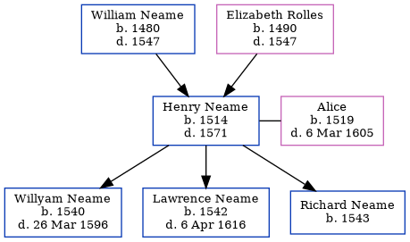

Henry Neame 1514 - 1571
[ Home ] | [ Calendar ] | [ Surnames Index ] | [ Family History ]The child of William Neame and Elizabeth Rolles, Henry Neame, the 12 times great-grandfather of Nigel Horne, was born in Woodnesborough, Kent, England in 15141 and married Alice (with whom he had 3 children: Willyam, Lawrence and Richard) in Woodnesborough in 15391.
He died in 1571 in Woodnesborough1,2,3 and was buried there on Mar 4, 1571.
Parents
- William was born in 1480
- Elizabeth was born in 1490
Children
- Willyam was born in 1540
- Lawrence was born in 1542
- Richard was born in 1543
Citations
- OneWorldTree Online publication - Provo, UT, USA: The Generations Network, Inc.
- Kent, England, Tyler Index to Parish Registers, 1538-1874 Online publication - Provo, UT, USA: Ancestry.com Operations, Inc., 2010. This collection was indexed by Ancestry World Archives Project contributors.Original data - Frank Watt Tyler. The Tyler Collection. Canterbury, Kent, England: The Institute of Herald
- UK, Extracted Probate Records Online publication - Provo, UT, USA: Ancestry.com Operations Inc, 2009.Original data - Electronic databases created from various publications of probate records.Original data: Electronic databases created from various publications of probate records.
Family Tree
Generated by Ged2Site. Last updated on Jul 20, 2025